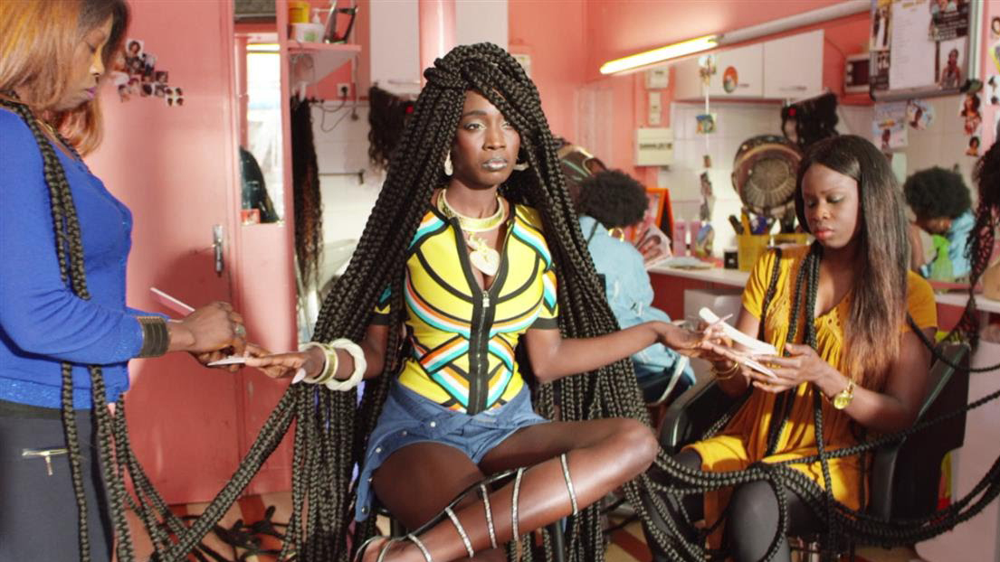
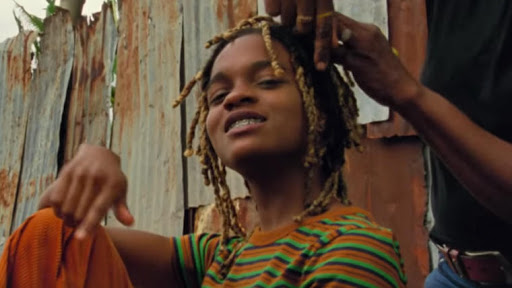

00:00
Musician - title - recording studio (date)
Nontsikelelo Mutiti: Hi we are live from the Performa Hub. Nontsikelelo Mutiti and um I’m here with Tinashe Mushakavanhu we are going to be reading from a couple of books today. Thank you so much to our hosts Chimurenga we are live on Pan African Space Station.
Tinashe delivered a whole bag of books to my apartment and um one of the books in the bags was The Hairdresser of Harare, which, he was horrified to hear that I hadn't read. A lot of my research reaches around African hair braiding and salons and looking at them and how they appear outside of the African continent, how they appear in the Diaspora and this book is set in my home country, the city that I come from and the salon that is described in here is blocks away or appears to be just a few blocks away from where I lived before I left to come to the U.S. So it's really wonderful to have this brought to me in the form of a book and it's sort of irresponsible of me to be doing this research without having read it. So I'm really grateful to my colleague for forcing me to take this up. But we're going to start off with another book by Binyawanga Wanaina, One Day I Will Write About This Place. Another reason why these texts are being included today is because as I'm working and even as I've been working to plan for this residency with Chimurenga, a lot of the other groups, the panels that are on the radio station are all women talking about new media talking about technology, publishing and collaborating in music. There were no men appearing in the work. There is a very minimal presence of men in this research, which is something that I'm really hoping to change and really start to think about the male figure in the space of the salon. So Tinashe I am not sure if you want to say anything to introduce the book or to introduce this collaboration between us before you begin to read from One Day I Will Write About This Place.
01:13
Tinashe Mushakavanhu: Thank you Nontsi. So the two books are dissimilar but compatible discussions about hair salons as public spaces and political spaces. And I thought it will be interesting, to put them together in conversation. I will be reading from One Day I Will Write About This Place, Chapter 2.
It is Saturday. I fake a nose bleed and mum lets me go to work with her. Mom has a hair salon. The only proper hair salon in Nakuru. Which is the fourth largest town in Kenya. It is called Green Art. Mum also sells paintings and wood carvings. I sit on the floor at the foot of a huge hunched specimen in mom's hair salon. I can smell coffee brewing from Kenya, coffee, house next door.
Ray Blk, Patience, recording studio, date
12:45
Nontsi: So we're going to end our reading there and maybe just talk a little bit about these books. Last night we were planning what people would do and Tinashe asked me to speak about my experiences in the hair salon and what I had sort of felt about this book "The Hairdresser of Harare" and was surprise that, Tendai Huchu had gotten most of the descriptions right. The collection of people in the space and what some of the dynamics are. There's a whole lot of descriptions about many different kinds of people – White women coming to the space, suppliers coming in. Something that isn't really tackled in the book is time. The time spent. How long the woman stays under the dryer, how long, the hair gets braided for. There are these very quick transitions between things and it makes me wonder about the research that was done for the book, aside from sort of gleaning what the surface looks like in those space. There's another thing I'm about to being a subject, being worked on and also, being the maker, being the hair braider and what that feels like. Doing that work. And as I've been sort of creating these installations and experimenting and learning, that's something that I really have to take care to include or to try to express. There's another aspect of these readings that I really loved that Tinashe brought to my attention, how the hairdressers become actual characters. They become people. In my installations, they're often waiting for people to inhabit the spaces, but I'm there sort of weaving a story and teaching people or sort of listening to people recounting what the space looks like to them and what the objects in the remind them of.
I've never really thought about this, placing the hairdresser as a character. Thinking about what they are really feeling as they are doing this work, what they are bringing to the space, what those dynamics are. There's a lot that can be a lot of tension and hierarchies in this piece. Vimbai who is the main narrator and is sort of reflecting on this gentleman coming into the salon totally gets displaced. He upsets the whole hierarchy because she's the established. hairdresser in that space. You know, in the beginning she talks about how she is the, hey, you know, "the hair dresser of Harare" but this gentleman comes and sort of like steals her thunder and becomes way more famous and all the women's start to come to him because he's extremely charming and can be experimental with his work. And if you want to comment on any of what you thought about the book and also why you decided to give this piece to me, what you feel it adds to my work.
15:36
Tinashe: For me the subject of the "hair dresser of Harare" is the hairdresser. So I think I, when I look at it, I think of the hairdresser as a curator and the Salon becomes a kind of living gallery. And I think the subject, it's not so much the people who are being attended to, but it is the space and what it represents. And I think sort of the, the spacing between the person; and the public. This intimate bonding that happens within this space. But I was also fascinated with the conversation between One Day I Will Write About This Place and the The Hairdresser of Harare largely because of the transient experience of sort of the salon, whether in Nairobi or in Harare, it's pretty much the same experience.
It is personal, it is political, it is communal. And I think in the readings that you were doing you kind of feel that. You don't necessarily see yourself, in Harare or in Nairobi, but you just find yourself in a Salon. I think for me that was one of the fascinating things and kind of just having these male characters, in turn the story from the salon. I feel that the whole hair discourse is very gendered. It is very female. Um, I've spent so much time like searching for blogs about men and hair. So for me it was fascinating to kind of read two books by male authors.
17:32
Nontsi: Yeah. There was something about the, except that you read from Binyawanga Wanaina's book. It's a description of a young boy in the space of the Salon. Children are always there. I've never really thought about what they are feeling or thinking as they're in that space. We started to think about what would this book have been like if it was narrated by a young girl who knows, but some of these processes. Sometimes her hair is being worked on in this space and so, she might be narrating maybe some aspiration, some dream about having a particular hairstyle that maybe she can't have yet because it's for older women. Or maybe she would be she sitting in the chair, she's getting her hair done and it is really, really tight and she's talking about the agony and you know, having to sit still for all of that time.
But, as you are reading that piece, you know, the young boy is under this dryer and he transforms it into this space helmet. And this is just like a new playground for him. The woman, the bride that comes in is like a huge grotesque figure. He's playing out this fantasy, and trying to occupy himself and escape from, you know, being outside or being forced to be in that space by his mother. You know there are so many layers in this space. There is constellation of figures. It is not just about where people are coming from, which I'm often thinking about when I'm in the space of the U.S. There are West African women, there are Southern African women, there are Black American women, there are Black American men.
Kendrick Lamar, HUMBLE, (C) 2017 Aftermath/Interscope (Top Dawg Entertainment)
Then back home thinking more about class, you know, who is in that space? The ministers to the business women. You know, that really comes into this piece. And I think also now back home does a huge conversation about what hair salons mean to people in terms of presentation. What it means to be living in a space where there's a financial crisis, and people are so concerned about masking that by presenting themselves as well as possible. So people in a really low income bracket spending what they can to get these hair extensions. Everyone is always getting their hair done. Tinashe was talking about a common scenrio back home where women ask their boyfriends or men that are interested in them at the end of every month to pay for their hair to be done. And I think that idea is quite interesting, the economy of the hair salon or what it exposes about people's financial status or exposes the different tiers. But you know, this child in the salon is a figure I never really factored into the work. It was wonderful to be inspired by this piece of text.
Wiley, Sean Paul, Stefflon Don - Boasty ft. Idris Elba, 2019, BMG
20:15
Tinashe: I think I'll just read another short except from a child's perspective.
So when you draw the hair of ordinary people, you can draw just random dots on the head for short hair or wildly scribble around with a crayon or a pencil for long hair. With overseas white people and international music stars like Diana Ross or the Jackson Five, you draw the outline carefully and colour or pain in yellow or black or brown inside, filing in all the gaps until the picture is one clear color and you cannot see lines or scratches. Just yellow, brown or black. When Ciru and I draw overseas people we are careful to make them look like they do in the coloring books and on television.
21:04
Tinashe: I just found it fascinating. I think for that the salon is also very performative. So I think for a child becomes a sort of a theater and they are telling stories, they're writing their own stories in their heads as they are watching sort of this drama playing out in terms of the conversations in terms of the interactions and just in terms of the look, the styles. For me that's one of the fascinating things about chapter two of this book. Just having this child's perspective in a salon. I think it would have been me. At times you are dragged by the maid or one of you older cousins, to sit with her in a salon. So it's, it's a it's a fascinating point of view.
22:08
Nontsi: Talking about perspectives, I'm curious about what you think as a grown man about this idea Black hair aesthetics. We've got these business cards that are playing on the monitor right now and the collection that I have from Harlem, when I walk on one 25th. There's often women standing on the sidewalk soliciting for businness and they're pushing these cards into my hand. My collection only contains remnants of that interaction. It's a card that I've been given. I don't go out to ask for it. And on these cards there's just one or two men featured if ever and the styles are very similar, but we know that there's a range of ways that men do their hair that I am not really tapping into yet.
So in terms of this imagery that's coming out of the salons, what do you think is missing for men and also in some of the images there is Alicia Keys, and a lot of salons now have images of Rihanna and Beyonce. in Harare you could walk into the salon and asked for Rihanna one, Rihanna two, Rihanna three. Which are names of hair styles. And there's also name of hairstyles for men, but we're not really seeing them representing these posters. Like what's your take on that in what you think has to be, has to be done?
23:34
Tinashe: I think the conversation about hair is very binary. So men, women, barber shop, salon. And I think any men, especially African men who want to a braid, their hair are perceive to be feminine, their sexuality id questioned. There is still a lot of that stigma. But I mean I think it's slowly changing. There are more men who are sort of plaiting their hair. But I also think the conversation itself still separates men and women.
24:26
Nontsi: In these books we don't have men just as clients or people looking at ways to groom themselves, the figure in "Hairdresser of Harare", he is the worker in the salon. And I haven't experienced much of that, but I did hear from my younger sister there is a group of young men, working in Dzivarasekwa, a suburb in Harare. That they are now going to people's homes to braid hair. I was a little bit worried when she told me she was going to try them out. I'm so used to women coming into our domestic space to, to braid for us. You know, there is a network. You get referrals through our friends. Um, and she wanted these young men to come into the apartment, so we organized it so that she would go in and get it done at a relatives house very close by. There were other people there. They did her hair and she's really comfortable with them. What do you think about this character, the male figure as salon worker? Not just someone working at the cash register, not just someone being the barber.
25:38
Tinashe: If you go to Johannesburg, Yoeville, Hillbrow, will find alot of me lining the streets waiting to plait. So you find alot of that in South Africa. And whenever I've spoken to my sister, she always says to me, I rather sit and have this this guy do my hair than wait for a woman. I think it is increasingly changing, but I guess with a country like Zimbabwe we are still stuck
26:15
Nontsi: Spaces are so gendered for us and the salon is really a space for women, men feel that they should do their hair in very specific ways, maybe three different ways. And the alternative hairstyle, is dreadlocks if you want to be creative, but that's so standard now.
26:34
Tinashe: So yeah I've seen a lot of those, men in South Africa who are working as salon workers and they are very popular. They always have clients, they make a good living and I think the fist time I saw them, they were just a few of them and now when you go there more and more of them. So it's kind of growing industry. Maybe I will try it when I go back. We'll see.
27:03
Nontsi: Are there any men for you whose hairstyles you feel are really interesting? We've been talking a lot about men who are writers. We've been looking at a lot of books by Dumbuzdo Marechera and I keep bugging Tinashe to help me with images of him cause I loved the way his hair looked at different stages. If for women salon posters show images of Rihana and Beyonce who should the figures be on posters for men? Or should there be any such thing? Maybe we shouldn't have any of these icons and we should just go and then ask what we want.
27:37
Tinashe: I mean, you'll find posters in barbershops. Yeah. Um, but I mean for me it's just always been the haircut that is in my head. So I just sit and I just say short, long and it happens.
28:01
Tinashe: When you talk about writers, I think dreadlocks seem to be sort of synonymous with creativity within Zimbabwe. And for Marechera, I think when you talk about Dambudzo Marechare it was by default. So his hairstyle was by default. It was more messy than a style.
28:29
Nontsi: Not combed, a non-style that becomes like an aesthetic.

28:33
Tinashe: Yes, because towards the end of his life he was living on the streets. He was kind of sleeping anyway that he could find. And that kind of became. So his hairstyle became this messy, cool look that every other young Zimbabwean wanted to have.
28:58
Nontsi: Are there any other books that you'd recommend for me now that I finished Hair Dresser of Harare, and I have to borrow 'One Day I'll Write About This Place" from you. What else do you think I need to add to my reading list in terms of like, texts where the literature is explaining the, writer is explaining sort of the situations of here being done or the figures or how, the aesthetic of people's hair is codified in the stories.
29:24
Tinashe: So I mean for me it's been fascinating that we have been, we've been talking about this two books written by two male writers. But we also find that in a lot of African American literature most of the literature that talks about hair is written by women. So we had talking about Toni Morrison, "The Bluest Eye", Songs of Solomon, We are talking about Zora Neal Hurston, "Their Eyes Were Watching God". I think there are references to hair in Alice Walker's, "The Colour Purple". And the you have figures like Bell Hook who have also been writing about the aesthetics and politics of hair. So from an African American I think the conversations is there, it is huge, but from an African perspective, I think we have very little that is specifically focused on hair. And I think yeah, there is an opportunity to do more for you and for others that and doing this same kind of work.
30:41